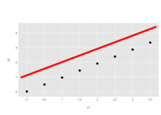
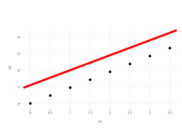

<!-- html table generated in R 3.1.2 by xtable 1.7-4 package -->
<!-- Fri Feb 20 20:28:12 2015 -->
<table border=1>
<tr> <th> test </th> <th> ggplot2 </th> <th> carson.scales.free </th> <th> toby.fixes.reviewed </th> <th> carson.scales.free.bug </th> <th> toby.fixes.bug </th> <th> master </th>  </tr>
  <tr> <td> <a href="abline.html">abline</a> </td> <td> <a href="../../data/ggplot2/abline.png"></a> </td> <td> <a href="../../data/1d4c09ae8ebef5a1365112a032e7a60b1178e3db/abline.png"></a> </td> <td> <a href="../../data/c47b8026a456a0ae382011db8ac4cce074fe5b1d/abline.png"></a> </td> <td> <a href="../../data/19e42abde99ef0663e7adcb6a6a70deb6ae1278f/abline.png"></a> </td> <td> <a href="../../data/5c98619896b226be4252bfa8757f2ddb5676f29f/abline.png"></a> </td> <td> <a href="../../data/1d75115f71908261e7e8d30de244f42fbcfa4840/abline.png"></a> </td> </tr>
   </table>
